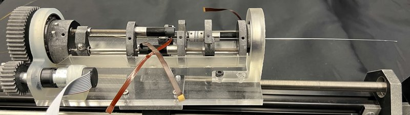

Actuated-tip devices · coast_jeong2020
COAST
COAST guidewire robot (coaxially aligned steerable)

1 / 8


- Family
- Actuated-tip devices (actuated-device)
- Devices
- the COAST wire itself (own nitinol-tube wire, not a commercial guidewire)
- Degrees of freedom
- 4 actuated axes in 2020 prototype (tendon stroke X1, inner-tube position X2, outer-tube advance X3, whole-module advance X4); roll added by spur gear in 2025 version
- Push
- Tip-actuated
- Twist
- Rotating drive unit
- Tested up to
- Ex vivo
- Sim-to-real
- None found — No simulation-trained controller found for this robot.
Testing
- Highest level
- Ex vivo
- What was tested
- ex vivo porcine aorta, navigation with COAST under fluoroscopic reconstruction (ravigopal2022 abstract); 2025: one qualitative teleoperated traversal of an aortic-bifurcation phantom with pulsatile flow, no success counts; 2020: phantom, no success count
- Key numbers
- 2020: tendon-stroke model RMSE 0.032 mm (27-37 mm bending lengths); follow-the-leader tip-to-path mean 4.53 mm (low curvature) and 14.66 mm (high curvature) in free space; 2023 shape RMSE 0.62-1.94 mm by motion type; 2025 wire buckled between introducer and actuator so insertion was hand-assisted
Mechanism
- Push (translation)
- tendon/tip-actuation
- Twist (rotation)
- none in 2020 prototype; spur-gear roll of actuation module (2025)
- Device range
- 2020 prototype 188-257 mm tubes, 'shorter than a clinical wire'; handheld spooling variant takes up to 1.5 m (chavenet2026_handheld)
- Target anatomy
- cardiovascular / peripheral (aortic bifurcation phantom, paediatric carotid and arch phantoms)
Sensing and interface
- Force sensing
- 2020: miniature force sensor on tendon tension; 2023: FBG triplet tip force, RMSE 0.005-0.027 N (bench)
- Leader and haptics
- no (Xbox controller teleoperation 2025)
- Imaging
- fluoroscopy used 2022, 2025; MR compatibility N.R.
- Sterility
- N.R.
Size
- Footprint (mm)
- N.R.
- Mass (kg)
- N.R.
Simulation
- Simulation model
- analytical tendon-stroke / static model with experimental fit (jeong2020 Sec. III, full); shape-from-FBG reconstruction (deaton2023, full); no physics simulator found
- Sim-trained controller
- none found (all control open-loop or teleoperated; no learned policy)
Versions
- Lineage
- 2020 3-tube design 0.40 mm OD (jeong2020_design); 2022 same family run under fluoroscopic path planning, ex vivo porcine aorta (ravigopal2022_fluoroscopic); 2023 larger 0.89 mm OD with 3-fibre FBG shape+force sensing (deaton2023_simultaneous); 2025 two-tube 'modified COAST', 0.35 mm outer tube, 0.66 mm Pebax sheath, joystick teleoperation (brumfiel2025_modified)
Sources
- Design, Modeling, and Control of a Coaxially Aligned Steerable (COAST) Guidewire Robot · IEEE Robotics and Automation Letters, 2020 · doi:10.1109/lra.2020.3004782 [jeong2020_design]
- Simultaneous Shape and Tip Force Sensing for the COAST Guidewire Robot · IEEE Robotics and Automation Letters, 2023 · doi:10.1109/lra.2023.3267008 [deaton2023_simultaneous]
- Fluoroscopic Image-Based 3-D Environment Reconstruction and Automated Path Planning for a Robotically Steerable Guidewire · IEEE Robotics and Automation Letters, 2022 · doi:10.1109/lra.2022.3207568 [ravigopal2022_fluoroscopic]
- Evaluating the Navigation Capabilities of a Modified COAST Guidewire Robot in an Anatomical Phantom Model · link [brumfiel2025_modified]
- Development of a Handheld Actuation Mechanism for a Tendon-driven Robotically Steered Guidewire · link [chavenet2026_handheld]
Notes
- Notes
- Family has the most hardware-complete published tendon guidewire in my scope; the 2023 paper and the 2025 modified version change OD, so quote the version with every size.
This record
- Read level
- full — full (jeong2020, deaton2023, brumfiel2025 arXiv, chavenet2026 arXiv); abstract (ravigopal2022)
- Picture
- deaton2023_simultaneous Fig. 1 (lower photo: COAST actuation stage with guidewire) ↗ — licence: publisher copyright (IEEE); grade A
- Picture changes
- native extract (2014 px); cropped; 2 black arrowheads on the white background erased (LaMa, 3 passes, looked at 4x zoom)
- Found by
- actuated-tip: Search of actuated-tip and magnetic devices.
- Data
- JSON · YAML:
records/robots/coast_jeong2020.yaml - Correction
- Suggest a correction [repository not created yet]